<div class="add-wrapper">
    <section class="main-card">
        <div class="city-search-wrapper">
            <div class="city-search-header">
                <h3 class="city-search-title">SEARCH CITIES</h3>

                <div class="search-city-input-wrapper">
                    <input class="search-city-input" placeholder="SEARCH CITIES" auto-complete [(ngModel)]="selectedCity"
                    (keyup.enter)="selectCity(selectedCity)"
                    (ngModelChange) = "selectCity(selectedCity)"
                    [source]="capital"
                    [max-num-list]="5" [close-on-focusout]="false"
                    >
                    <button class="search-city-btn" (click)="selectCity(selectedCity)">
                        <svg class="search-icon" xmlns="http://www.w3.org/2000/svg" viewBox="0 0 451 451">
                            <path fill="#FFF"
                                d="M447 428L337.6 318.4A192.5 192.5 0 0 0 192.4 0C86.3 0 0 86.3 0 192.3s86.3 192.3 192.3 192.3c48.2 0 92.3-17.8 126-47.2L428.2 447a13.2 13.2 0 0 0 19 0 13.5 13.5 0 0 0 0-19zM27 192.3C27 101.1 101 27 192.3 27c91.1 0 165.3 74.2 165.3 165.3s-74.2 165.4-165.4 165.4A165.6 165.6 0 0 1 27 192.3z">
                            </path>
                        </svg>
                    </button>
                </div>
            </div>

            <div class="city-search-body">
                <!-- <span class="city-invalid-note" *ngIf="showNote">City name is not valid. Note: only capital cities are supported for now</span> -->
                <app-weather-card id="weatherCardAddCity" (cityStored)="selectedCity = ''" *ngIf="cardCity" [city]="cardCity" [addMode]="true"></app-weather-card>
            </div>

        </div>

        <div class="fav-city-wrapper">
            

            <div class="fav-city-header">
                <h3 class="fav-city-tittle">CITY OF THE MONTH</h3>
                <span class="fav-city-date">Sunday, 31th July</span>
            </div>

            <div class="fav-city-body">
                <div class="fav-city-body-subwrapper">
                    <div class="fav-weather-icon" [ngSwitch]="true">
                        
                        
                        
                        
                        
                         
                    </div>

                    <div class="fav-city-info">
                        <span class="fav-city-temp">{{temp}}°</span>
                        <div class="fav-city-name-wrapper">
                            <span class="fav-city-name">ROME</span>
                            <span class="fav-city-country">IT</span>
                        </div>
                        <span class="fav-city-state">{{state}}</span>
                    </div>

                    <button class="fav-city-add-btn" (click)="addCityOfTheMonth()" [ngClass]="{'fav-city-added-btn': checkFollow}" [disabled]="checkFollow">{{checkFollow ? "FOLLOWED" : "FOLLOW"}}</button>
                </div>
            </div>

        </div>
    </section>
</div>